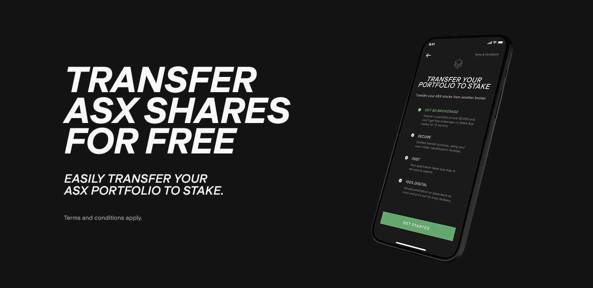

How To Claim Your Free Stock
When you start investing with Stake, it is essential to receive your free stock, this article will guide you through that exact process. So if you want to receive Stake's free stock in 2022, you'll love this detailed article. Let's dive right in…
When investing in US and Asx200 stocks the best platform to use is hellostake.com. If you’re here for a Stake Referral Code here it is roryd473. Stake is an online app and website to buy U.S and most recently ASX stocks without commissions. It is a popular choice within Australia, as it is a great way to invest in the United States Stock Market. Stake exists to break barriers between people within Australia & New Zealand and provide citizens with these financial opportunities on the United States Stock Exchange, It is certainly the best way to buy US stocks.
Currently, hellostake.com is offering stock bonuses when signing up to their platform under a referral code. If you’re looking to sign up for Stake then be sure to enter this working Stake Referral code for 2022 roryd473 to get a guaranteed chance to win a Stake free stock worth $10 to $100.
About The Stake Investing Platform
Founded in 2017, Stake is an Australian-based zero-fee discount broker, which specializes in US stocks and ETFs the brokerage is overseen by top-tier investing apps. Stake is a platform for trading US stocks & ETFs for people in Australia & New Zealand. Trading US stocks & ETFs was very expensive for Australians in the past, until platforms such as hellostake.com & Spaceship Voyager got introduced, now with these platforms, you’re able to have access to trading platforms that are free of commissions.
Stake is considered safe because the platform is regulated by the top regulators and client assets are protected up to an amount of $500,000 under the securities investor protection corporation’s insurance. Stake operates in Australia, New Zealand, the United Kingdom, and Brazil. Stake provides the same services in these countries; however, they have slight differences to comply with different federal laws.
Opening A Account
Opening an account with Stake is a process that is completed fully online and fast. The trading platforms are user-friendly and well-designed Australian investing apps. On the negative side, Stake only offers stocks and ETFs limited to the US market. Stake takes a small FX conversion fee to make money. When you use AUD (bank transfer or credit card) to fund your account, it converts into USD.
Now, Stake is providing a service that offers Australian and New Zealand citizens the ability to invest and trade US stocks without commission, meaning more buying of shares and fewer fees. You can invest in different shares such as Microsoft, Netflix, Apple, Tesla, etc. Moreover, you can invest in ETFs from Vanguard and many other companies. The stake platform has expert investor opinions that are present on a minority of stocks, to help its users choose a profitable investment, however, Stake recently has created Stake Black, which provides user’s that pay a monthly fee of $9 for expert opinions, beneficial advice and instant trading for day traders.
Stake Black, is a premium subscription for accounts that allows users to take control of their investments with more advanced tools and features such as Instant buying power, Analyst Ratings and Price Targets.
What Are The Benefits?
Stake understands how frustrating it can be to wait the US-market-standard T+2 days for sales to settle. Using Stake Black, you can have instant buying power, allowing you to immediately reinvest funds from a sale as soon as it is executed. Providing the opportunity to day trade U.S stocks and ETFs instantly, making Stake a completely unique experience within Australia & New Zealand.
It is one thing access to Wall St, but another thing is to have the latest access to Wall St express. Get a more informed opinion on a company or stock by assessing how the most successful people in business value the stocks.
Buying or selling out of a position is never easy, with stake black and normal users you are provided with pricing targets so you can see how others are valuing stocks. Pricing targets can assist in your decisions based on collective analyst valuations.
- Stake is a commission-free platform, it does not charge any commissions for selling or buying like the traditional brokers.
- You just have to pay the FX fee, a small conversion fee for depositing AUD.
- The FX conversion fee is pretty affordable, and you can deposit in USD.
- You can use POLi to deposit online in your bank account.
- The service is Trusted by Australia Post.
- You can quickly trade, access your fund, and deposit using a credit or debit card.
- You can trade a huge range of US stocks from Australia & New Zealand.
If you are going to sign up to start investing with Stake then enter this referral code roryd473 to get a bonus stock.
Stake's Investing Fees
Stake provides free stock and ETF trading on US exchanges. There are no fees for inactivity or trading. Stake, on the other hand, makes money from the depositing and withdrawal of funds, specifically from currency transfers.